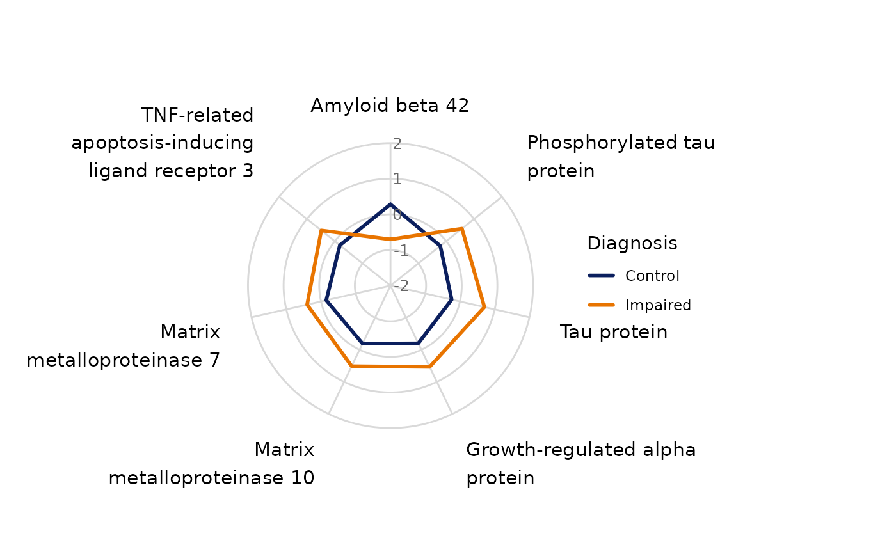

Plot a spider chart across continuous and binary variables
Source:R/PlotSpiderChart.R
PlotSpiderChart.RdThis function summarizes a set of variables and displays them on a spider
chart. Continuous variables are plotted as mean z-scores by default using
CreateZScoreObject(), while binary variables are plotted as percentages. It can
overlay groups on one spider chart or facet by group, optionally fill the
polygons, relabel spokes using variable labels, wrap long labels, reorder
variables to visually emphasize between-group differences, and optionally
return an interactive radar chart using plotly.
Usage
PlotSpiderChart(
data,
variables,
group_var = NULL,
Relabel = TRUE,
ContinuousSummary = "mean",
ContinuousScaling = "zscore",
Fill = FALSE,
FillAlpha = 0.2,
Facet = FALSE,
VariableOrder = "input",
VariableCategories = NULL,
BinaryPositiveValue = 1,
Palette = "Dark 3",
LineSize = 1,
PointSize = 2,
ShowPoints = FALSE,
LegendTitle = NULL,
PlotTitle = NULL,
Subtitle = NULL,
Caption = NULL,
AxisLabelSize = 12,
AxisTextSize = 10,
StripTextSize = 11,
WrapLabels = TRUE,
LabelWrapWidth = 22,
LabelRadiusMultiplier = 1.22,
PlotMarginTop = 40,
PlotMarginRight = 120,
PlotMarginBottom = 40,
PlotMarginLeft = 120,
interactive = FALSE,
InteractiveHeight = 700,
InteractiveWidth = NULL,
InteractiveAxisMin = NULL,
InteractiveAxisMax = NULL,
tooltip_digits = 2,
Data = lifecycle::deprecated(),
Variables = lifecycle::deprecated(),
GroupVariable = lifecycle::deprecated(),
TooltipDigits = lifecycle::deprecated(),
MakeInteractive = lifecycle::deprecated()
)Arguments
- data
A data frame.
- variables
Character vector of variable names to plot.
- group_var
Optional grouping variable name. If NULL, one overall summary profile is plotted.
- Relabel
Logical; if TRUE, use variable labels when available.
- ContinuousSummary
Character; one of
"mean"or"median".- ContinuousScaling
Character; one of
"zscore","none", or"minmax".- Fill
Logical; if TRUE, add transparent polygon fills in the static ggplot version and filled polygons in the interactive version.
- FillAlpha
Numeric transparency for fills.
- Facet
Logical; if TRUE and
GroupVariableis supplied, facet by group instead of overlaying all groups on one spider chart. Ignored wheninteractive = TRUE.- VariableOrder
Character; one of
"input","discrimination","hierarchical","greedy", or"category_discrimination".- VariableCategories
Optional character vector of categories for
Variables. Must be the same length asVariableswhen supplied.- BinaryPositiveValue
Optional positive value to use for non-factor binary variables. Defaults to
1. For factor variables, the second factor level is used.- Palette
Character name of an
hcl.colors()palette. Defaults to"Dark 3".- LineSize
Numeric line width for the static ggplot version.
- PointSize
Numeric point size for the static ggplot version.
- ShowPoints
Logical; if TRUE, show points at each spoke in the static ggplot version.
- LegendTitle
Optional legend title. Defaults to
GroupVariable.- PlotTitle
Optional plot title.
- Subtitle
Optional plot subtitle.
- Caption
Optional plot caption.
- AxisLabelSize
Numeric axis text size for spoke labels in the static ggplot version.
- AxisTextSize
Numeric text size for radial axis labels in the static ggplot version.
- StripTextSize
Numeric facet strip text size in the static ggplot version.
- WrapLabels
Logical; if TRUE, wrap long spoke labels.
- LabelWrapWidth
Numeric wrap width passed to
stringr::str_wrap().- LabelRadiusMultiplier
Numeric multiplier controlling how far labels sit outside the spider in the static ggplot version.
- PlotMarginTop
Numeric top plot margin for the static ggplot version.
- PlotMarginRight
Numeric right plot margin for the static ggplot version.
- PlotMarginBottom
Numeric bottom plot margin for the static ggplot version.
- PlotMarginLeft
Numeric left plot margin for the static ggplot version.
- interactive
Logical; if TRUE, return an interactive plotly radar chart instead of a static ggplot. Default is
FALSE.- InteractiveHeight
Numeric height in pixels for the interactive widget.
- InteractiveWidth
Optional width passed to plotly layout. Defaults to NULL.
- InteractiveAxisMin
Optional numeric minimum for the interactive radial axis. If NULL, auto-detected from the summarized values.
- InteractiveAxisMax
Optional numeric maximum for the interactive radial axis. If NULL, auto-detected from the summarized values.
- tooltip_digits
Integer number of digits to show in interactive tooltips.
- Data
Deprecated (since 19.15.0). Use
datainstead.- Variables
Deprecated (since 19.15.0). Use
variablesinstead.- GroupVariable
Deprecated (since 19.15.0). Use
group_varinstead.- TooltipDigits
Deprecated (since 19.15.0). Use
tooltip_digitsinstead.- MakeInteractive
Deprecated (since 19.15.0). Use
interactiveinstead.
Examples
data(SampleData)
data(SampleVariableTypes)
Labelled <- RevalueData(SampleData, SampleVariableTypes)$RevaluedData
# Static spider chart
PlotSpiderChart(
Labelled,
variables = c("age", "AXL", "Adiponectin", "Alpha_1_Antitrypsin"),
group_var = "Diagnosis"
)

# Interactive (plotly) version of the same chart
PlotSpiderChart(
Labelled,
variables = c("age", "AXL", "Adiponectin", "Alpha_1_Antitrypsin"),
group_var = "Diagnosis",
interactive = TRUE
)
#> Warning: Specifying width/height in layout() is now deprecated.
#> Please specify in ggplotly() or plot_ly()